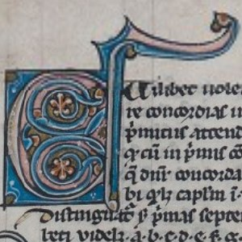
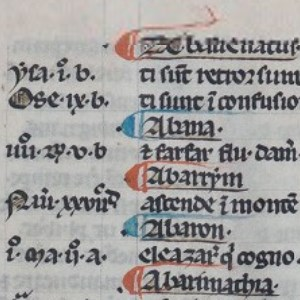
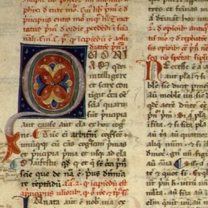
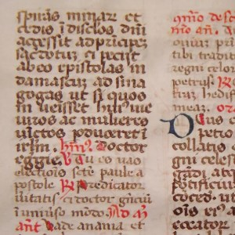
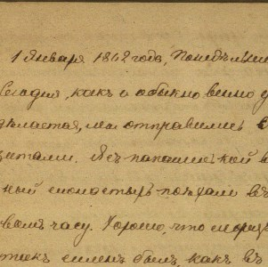

Алексей Кузнецов
На этой странице размещены ссылки на материалы к статьям, посвященным компьютерному анализу средневековых латинских текстов.
GitHub
Компьютерный анализ средневековых латинских текстов
Latin Text Analysis

Применения инструментов text mining для анализа средневековых латиноязычных текстов: предварительная обработка текстов
Read more →

Анализ тональности средневековых латинских текстов на основе словаря эмоциональной лексики
Read more →

Компьютерный анализ текстов на латинском языке: Тематическое моделирование «Истории готов, вандалов и свевов» Исидора Севильского
Read more →

Компьютерный анализ текстов на латинском языке: Латентно-семантический анализ «Истории готов, вандалов и свевов» Исидора Севильского
Read more →
Компьютерный анализ текстов на латинском языке: Тематическое моделирование «Истории франков» Григория Турского
Read more →

Тематическое моделирование дневника студента-медика XIX века.
Read more →
Конкорданс произведения «О происхождении и деяниях гетов» Иордана: опыт создания с использованием Orange 3
Read more →
Материалы к статье "МАШИННОЕ ОБУЧЕНИЕ И КУЛЬТУРА: АНАЛИЗ СОЦИО-КУЛЬТУРНЫХ ПРЕДУБЕЖДЕНИЙ В БОЛЬШИХ ЯЗЫКОВЫХ МОДЕЛЯХ НА ПРИМЕРЕ GIGACHAT И YANDEXGPT"
Read more →